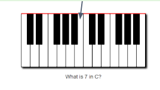
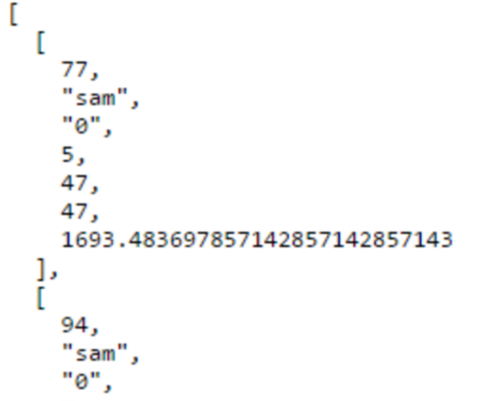
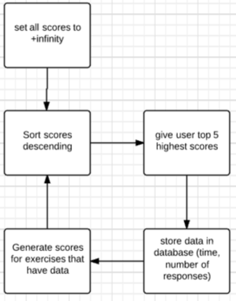
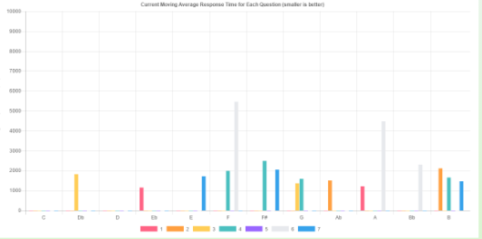
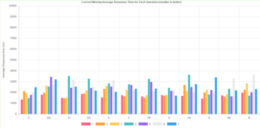
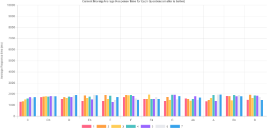

A running version is available at heroku
Abstract
Music theory fundamentals are difficult skills to improve, since they are built from so many small abilities. The goal of this project is to produce a proof of concept system that will intelligently help the user improve their skills. The system produced has been shown to quickly understand where the user needs improvement and after using the system, improvement has been seen in the user’s ability.
Problem Description
The problem is all about choosing optimal next exercises from a large set of possible exercises to give the user. They a pattern produce from major scales in all 12 keys. Each question looks like the figure below. The user in that case would click the key on the piano representing B, as pointed out.

Data is produced from these exercises to be used for analysis and generating the next set of challenges to be given to the user. The data stored involves a unique id, the username, key, scale degree, number answered, number correct, and average response time.

Methods
A multi-user web based system has been created which implements the method. The task to be trained is this. The set of all possible exercises is a two dimensional matrix consisting of major keys in the range 0-11 and scale degrees 1-7 respectively. The task to be trained is finding those exercises which will be the most difficult for the user, and thus give them the most improvement over time. The algorithm used follows the flowchart below. Each of the data points is set to infinity response time, this way the user will be presented with every exercise once before the system makes decisions. The response times are averaged with previous responses for the same question to produce a score. Each time the application requests more exercises for the user, they are sorted descending by score, and the top five are returned, representing the five exercises the user is worst at in terms of response time. The process until the user’s abilities are zeroed in on, at which point they are repeatedly given their worst until they improve on them, then it slowly changes.

Results
An informal study has been conducted for the system. The purpose was to find out a method of scoring that generates good exercises with enough flexibility to let the user improve over time while still maintaining useful historical data.
A neural network was tested, but found unfit. Scoring based on the average response time for each exercise was also tested, with good results, but it was found to “harden” after a large number of exercises, not allowing the user to improve and move to other exercises. It was found that producing a moving average with 10 data points using the response time produced a score that changed as the user changed, but slowly enough that the user had to show real improvement to get better scores.
This method has proven effective in basic tests, and more research can be done to implement it in other fields
The system was used for some time. Below are some of the progress graphs generated by the system for users at different amounts of practice time. The y axis is milliseconds average response time, and the x axis is the key and scale degree. See how with some use, problem areas can be identified, and with extensive use, smoothing out occurs. This is learning!
Some initial data points after limited use

After some use

After extensive use. (Note the time improvement in problem areas)
